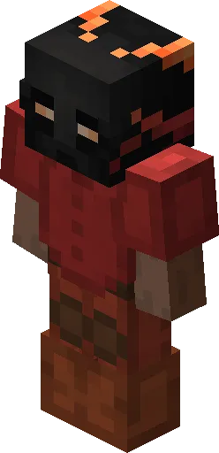

Players
Browse community members, compare profiles, and track leaderboard standings across all SkyBlock skill categories.
Updated May 2026
v0.21

Leaderboard Overview
Track the top players across all SkyBlock skill categories. The leaderboard updates every 24 hours and covers Skills, Slayer, Catacombs, and Net Worth rankings. Use the filter panel to narrow by server or profile type.
Profile Lookup
Search any Minecraft username to view their SkyBlock profile. Stats include skill averages, slayer XP, Catacombs level, net worth estimate, and active pet. Data is pulled from the Hypixel API and refreshed hourly.
Skill Rankings
Compare skill levels across Mining, Farming, Combat, Fishing, Foraging, Enchanting, Alchemy, Carpentry, and Runecrafting. Each skill has a separate leaderboard and milestone tracker.